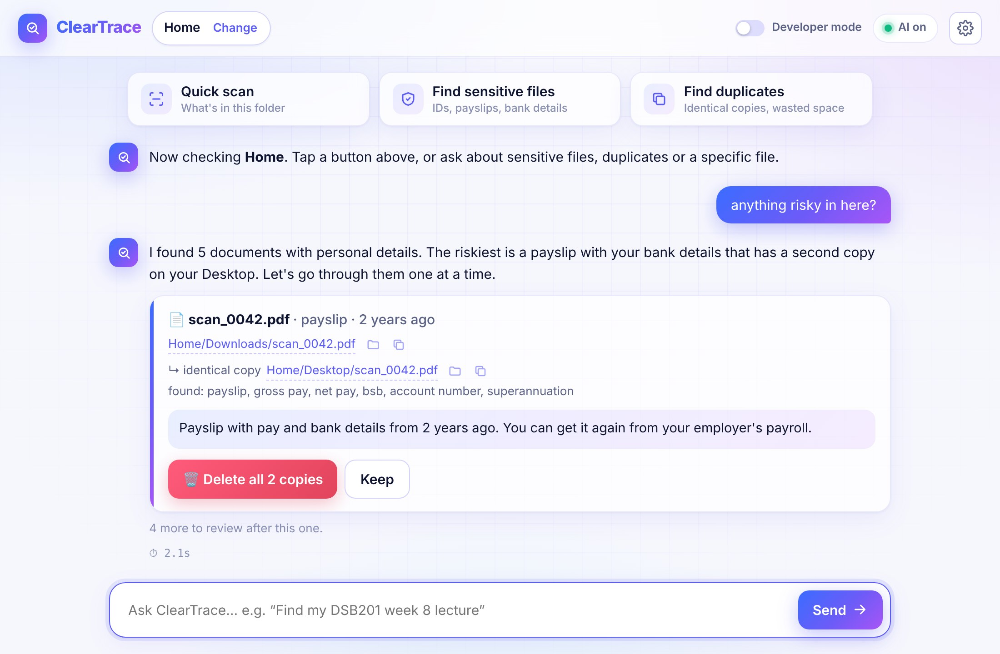

AI file tracer · fully secure
Find what's hiding on your computer.
Old payslips, passport scans, staff tax forms and copies of copies. Just ask ClearTrace, and clean them up in one click.

Download
Get ClearTrace
One small file. Double-click and it opens in seconds, with nothing to install or set up.
Windows
Windows 10 and 11 · 64-bit- Single .exe, nothing to install
- Scan any folder or whole drive (C:, D:, USB)
- Deleted files go to the Recycle Bin
First time opening it? Windows may say “Windows protected your PC”, because ClearTrace is new and not yet signed.
- Click More info
- Click Run anyway
macOS
Apple Silicon (M1 and newer)- Unzip and open, nothing to install
- Scan any folder or drive, including USB
- Deleted files go to the Trash
First time opening it? macOS blocks new apps from unknown developers.
- Unzip, then right-click ClearTrace → Open
- Click Open again
Why ClearTrace
Ask. Review. Clean.
Finds sensitive files
Reads inside documents, so scan_0042.pdf is recognised as a payslip. Claude explains each one in plain English.
Cleans every copy
Byte-for-byte matching finds exact duplicates across folders and drives. You choose which copy to keep.
Fully secure
Files are scanned on your computer and never uploaded. Deletes go to the Recycle Bin, so nothing is lost by accident.